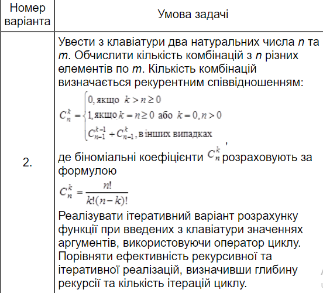
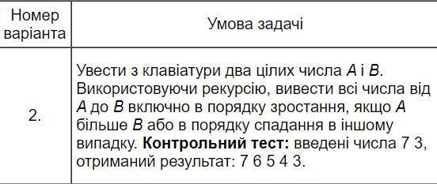

Лаборатна робота № 5
Умова задачі
Завдання 1: Обчислити значення рекурсивної функції, заданої рекурентним співвідношенням. Визначити глибину рекурсії. Здійснити аналіз ефективності рекурсивного розв'язку задачі. Програма повинна реалізовувати два способи розв'язання лабораторного завдання: з використанням рекурсії та з використанням ітерації (циклу). В процесі ітераційної реалізації завдання слід підсумувати кількість ітерацій.

Завдання 2:Рекурсивна обробка послідовностей. Забороняється використовувати масиви і рядки. Використання рекурсії для розв'язання завдання 2 обов'язково!!
